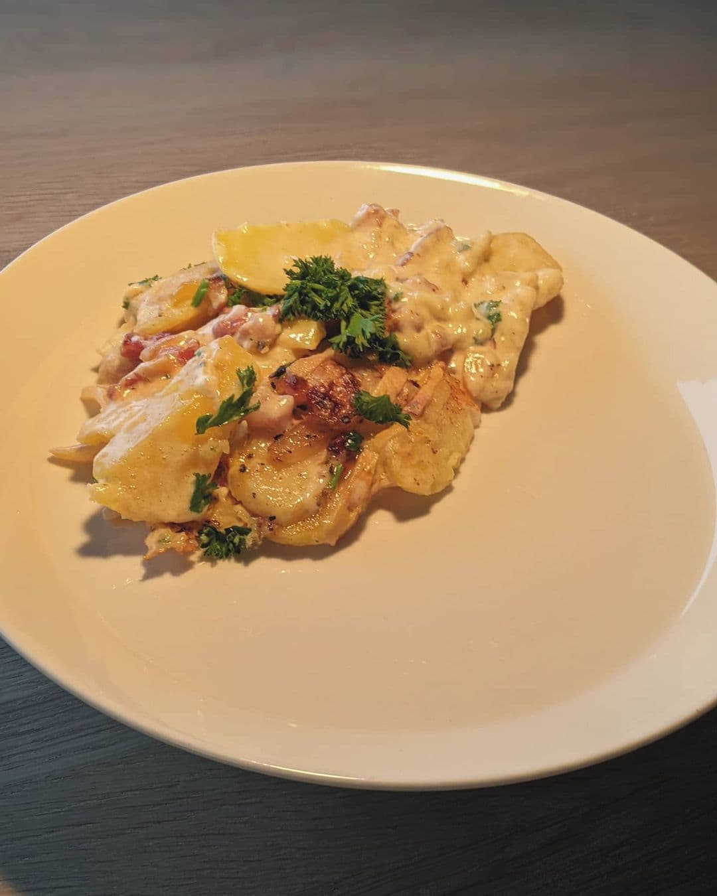
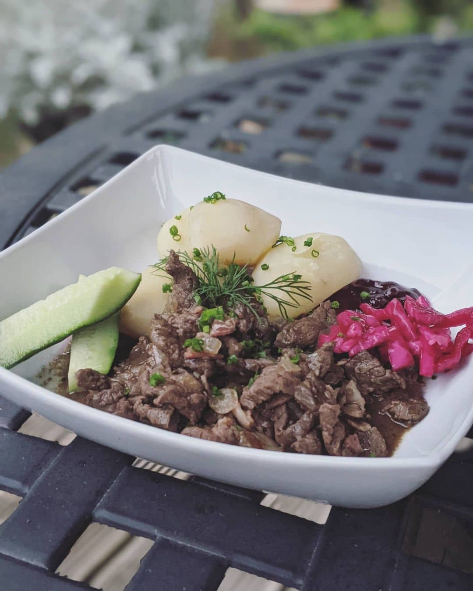
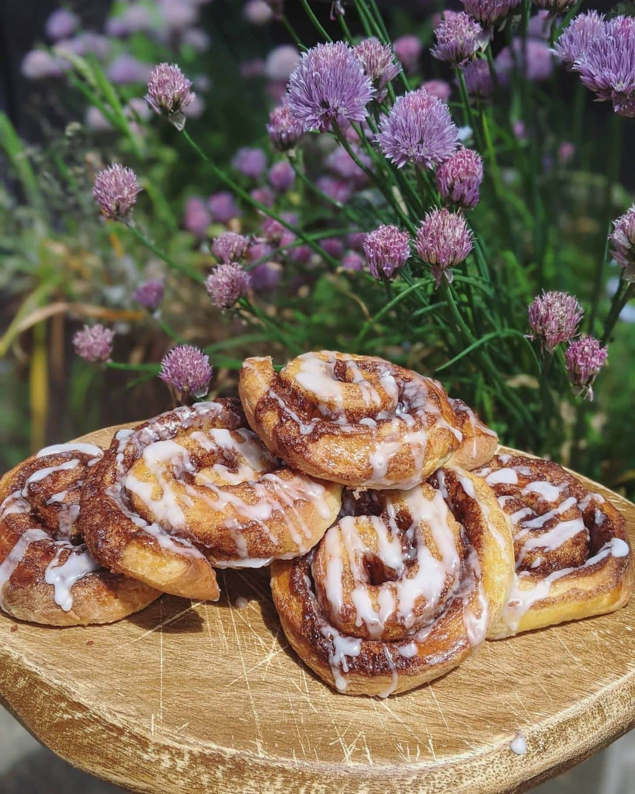

⚽️ The rules 🍲
The aim isn't to cook in support of a team, or to pick the winning team (although we like to keep track of how it ties in). It's to cook as wide a range of new dishes as possible, to learn new things about each country, and try new food. Aim to avoid repetition of teams as much as you can (some strategic choices during group stages come in handy here!).
For a better idea of how this works, have a look at one of the previous tournament sites:
If you'd like to stay right up to date I tend to add everything to instagram before it appears on this site.
Distinct countries eaten
Wins eaten
Draws eaten
Losses eaten
Match 22: 11 July 2021
ó §ó ¢ğŸ‡®ğŸ‡¹ Italy vs ğŸ´ó §ó ¢ó ¥ó ®ó §ó ¿ England
1-1 (3-2 pens)
Cornish pasties, fish & chips, and treacle tart
One month, 22 meals, 18 different cuisines, and some bloody good food later it was time for the final. Much as I'd have loved an Italian feast it had to be England.
As with previous tournaments, the final was a good opportunity to go out with a bang and so rather than just one thing, there were three:
ó §ó ¢ğŸ¥© Traditional + steak and stilton Cornish pasties
ó §ó ¢ğŸŸ Fish and triple cooked chips, scraps, mushy peas, tartare sauce, curry sauce, plus (bought) pickled onions and cornichons from the fridge as there were no gherkins
ó §ó ¢ğŸ¥§ Treacle tart
As usual there were some fuck ups, but all came good in the end. I totally forgot to put cream for the tart on the shopping list, so improvised with the end of a tub of ice cream. I also had no baking parchment so used some dumpling steamer lining paper for my baking beads (at least I didn't have to use almonds this time...). But despite that I was pretty pleased with how it all came out.
On the pitch not the end to the tournament I'd hoped for, but at least I had enough treacle tart to keep me on a sugar high for the next week as a distraction.
Until next time...
Match 21: 7 July 2021
ó §ó ¢ğŸ´ó §ó ¢ó ¥ó ®ó §ó ¿ England vs 🇩🇰 Denmark
2-1 (AET)
Smørrebrød selection
Another tactical choice, which did lead to a Spain/Denmark/Spain/Denmark set of meals, but also led to a really fun dinner.
When looking for Danish options (we wanted to leave the door open for doing England for the final), I really liked the idea of doing a set of open sandwiches, possibly because Geri's recent instagram post had stuck in my mind as being a bit different as a meal.
We did four different types in the end, and I really enjoyed putting them together as much as eating them.
Most of this was assembly. I've included the recipes below, but there's minimal actual cooking and it was more about flavour combinations. For the remoulade see the recipe from the Polser.
Match 20: 6 July 2021
ó §ó ¢ğŸ‡®ğŸ‡¹ Italy vs 🇪🇸 Spain
1-1 (4-2 pens)
Marmitako, calamares fritos, pimientos de Padrón
A tactical choice to repeat so soon, but 1. I hadn't been around for the last Spain meal, and 2. I thought Italy would go through, and could be a good option for elaborate final feasting.
As the tournament goes on, there's something nice about doing more cooking for the later stages. With this meal, we decided on Marmitako, a Basque dish. As an aside, I learnt that "The original French word marmite is a metal pot with lid" (thanks wikipedia). I then went to the supermarket to do The Shop, but got distracted by the thought of padron peppers and squid, so decided to extend the menu on the fly.
The squid in particular turned out great, it was really quick and easy and didn't even need too much oil. The fish counter had baby squid which also probably helped to keep it tender.
With the Marmitako we ended up using dashi as the fish stock, and cheated by putting a bit of extra fish sauce in to give it a bit more depth. I'd probably play around with the flavouring a bit if I did it again, but otherwise it was a decent dinner.
5 July 2021
No match played
4 July 2021
No match played
Match 19: 3 July 2021
ó §ó ¢ğŸ‡¨ğŸ‡¿ Czech Republic vs 🇩🇰 Denmark
1-2
Danish Polser with Remoulade
THE FIRST OF THE REPEAT COUNTRIES. To be fair, to get to this stage (match 19) with no country repeats isn't bad going. We decided to go with Denmark because the previous meal was very early on, and wasn't a dinner.
These were great football watching food, would recommend.
Match 18: 2 July 2021
ó §ó ¢ğŸ‡¨ğŸ‡ Switzerland vs 🇪🇸 Spain
1-1 (1-3 pens)
Pollo al ajillo, chorizo a la sidre, patatas bravas
There's usually at least one fuck up, and this time it was on me. I was in London this day, staying over in a hotel with zero cooking facilities. I thought I was being really smart, and had found a Swiss 'recipe' for schoggisauce, which I was planning to make in the office microwave. And then... forgot.
Thankfully after a lot of chiding my husband back at home was able to jump in and save the streak. And for what it's worth, I did eat a whole plate of padron peppers in the evening (but didn't cook them, so it doesn't really count, if you're looking at future Spain dishes...).
Sorry Switzerland, my sweepstake team. How different things may have been for you if I'd remembered. ó §ó ¢ğŸ˜”
1 July 2021
No match played
30 June 2021
No match played
Match 17: 29 June 2021
ó §ó ¢ğŸ´ó §ó ¢ó ¥ó ®ó §ó ¿ England vs 🇩🇪 Germany
2-0
Koenigsberger meatballs
England's been in the middle of a classic rainy summer, and this ended up being a hearty autumnal meal to go with it. I really enjoyed this, particularly how the capers cut through the cream sauce.
Match 16: 28 June 2021
ó §ó ¢ğŸ‡ğŸ‡· Croatia vs 🇪🇸 Spain
3-5 (AET)
Peka
Lamby, meaty, vegetable smush! It was pretty tasty, but at the end it did end up with the sauce being basically just lamb fat (even when I tried to strain it), and was therefore a bit drier on the plate than I'd imagined. We'd got bread to go with it, but didn't need this for dipping. If we did it again I'd do more liquid, and more fat draining.
Match 15: 27 June 2021
ó §ó ¢ğŸ‡³ğŸ‡± Netherlands vs 🇨🇿 Czech Republic
0-2
Appeltaart
Due to the sheer amount of tasty dough left over (it just kept doubling and doubling) there was plenty to have for dinner the next day, so we decided to do another pudding. This timee it was a Dutch Appeltaart, which was all pretty straightforward, although I cooked it for about 10 minutes less than the recipe said.
Match 14: 26 June 2021
ó §ó ¢ğŸ‡®ğŸ‡¹ Italy vs 🇦🇹 Austria
2-1
Calzone

We've made pizza in a previous tournament (and just generally), but somehow we've never ever made calzone before. This was great. I made a white sauce with basil and gorgonzola for mine, and stuffed it with chicken, ham, pancetta, black olives, and mozzarella. There was enough left over for breakfast, and enough dough for the next night.
It was preceded by a small limoncello brought back from Ischia on a trip, which had been hiding in a cupboard ever since.
25 June 2021
No match played
24 June 2021
No match played
Match 13: 23 June 2021
ó §ó ¢ğŸ‡¸ğŸ‡ª Sweden vs 🇵🇱 Poland
3-2
Smulpaj
I can't remember exactly why we picked this, but pick it we did! It was possibly an "oh shit, what can we get ingredients for?", but also we never ever cook dessert so actually it was a nice change to have something different in that respect.
This was a tasty berry crumble, nothing not to like 👍🏼
Match 12: 22 June 2021
ó §ó ¢ğŸ‡¨ğŸ‡¿ Czech Republic vs ğŸ´ó §ó ¢ó ¥ó ®ó §ó ¿ England
0-1
Česnečka
Back to back garlic meals, woo! This is a traditional Czech garlic soup, also apparently known as "hangover soup".
This went from "errrrr it just tastes like garlic water" to actually being really good and something I'd do again. I'd recommend having a good stock (we used chicken), and using a lot more garlic (we also chucked in some garlic powder). It also needs seasoning really well to bring out the flavour if your stock isn't too salty.
Definitely recommend having croutons, and adding the cheese to serve (just used grated parmesan as wasn't going on another cheese mission so soon again). The last dying wild garlic plants are still just holding on, so we used some leaves and some of the fruits for garnish, which also gave it a lot more garlic flavour.
Match 11: 21 June 2021
ó §ó ¢ğŸ‡ºğŸ‡¦ Ukraine vs 🇦🇹 Austria
0-1
Chicken Kiev
There's always some dish where the origins are contested and you could arguably do it for one country or another, but if there's a bronze sculpture of one in Kyiv then that's enough to declare a winner for me.
Not much to say about making this apart from to recommend taking the time to bash out the chicken as thin as the recipe says, and that freezing definitely helps. We managed to get a really good exterior crunch, they puffed up nicely, and all stayed sealed. Served it with a little side salad as I'd been craving vegetables (another common curse of this game), plus boiled potato.
Match 10: 20 June 2021
ó §ó ¢ğŸ‡®ğŸ‡¹ Italy vs ğŸ´ó §ó ¢ó ·ó ¬ó ³ó ¿ Wales
1-0
Crempog
Another breakfast rather than a dinner, but it was my last night in Dungeness and I wanted to relax and be lazy on the last evening. Plus also because I couldn't not cook something with a name as great as "Crempog".
Thanks to my additional shopping trip in Hythe I was able to get buttermilk, which I don't think I've actually ever cooked with before. The batter came together really nicely, and I even followed the recipe by letting it rest for a while as I shot over to one of the neighbouring open studios in the morning.
I gave myself some topping options and they were great with butter, jam, and syrup. Would definitely make these again for brunch sometime.
Match 9: 19 June 2021
ó §ó ¢ğŸ‡ğŸ‡º Hungary vs 🇫🇷 France
1-1
Tartiflette
Tartiflette is one of the few things that French mountains have over Austrian mountains, in my opinion. It's rich, utterly delicious, and full of all the best kinds of bad ingredients.
On my way down south I swung past John Lewis Food Hall in Bluewater to buy the bits I'd need, as I thought of all the middle class places I'd be passing that'd have niche cheese, they would. Sadly, despite having a cheese shop within a supermarket, there was no reblochon in sight. Shame on you, John Lewis Food Hall.
Determined to find some and not bodge it with substitutions, on Saturday I went on a drive in the middle of my day of long walks, driving from Dungeness to Hythe (hour round trip) where thankfully they had not one but two reblochon options. Dinner was saved!
After walking all day, holeing up back at my pad for a bath, sauna, and with an alpine filthy cheese meal to follow was much needed.
Back at home my husband was also still playing along, and was boasting about how he was going one-up my tartiflette by making an "enhanced" one. I was on board at first, when he was talking about infusing the cream with rosemary. Sure, sounds nice. Then I got the photos of the full monstrosity, shared without comment (😂).
Match 8: 18 June 2021
ó §ó ¢ğŸ´ó §ó ¢ó ¥ó ®ó §ó ¿ England vs ğŸ´ó §ó ¢ó ³ó £ó ´ó ¿ Scotland
0-0
Toad in the hole, Bakewell tarts
I was off on a solo holiday away today. This time I thought I'd bring some of the basics that I'd need over the next few days, and packed a sensible dish, baking trays, and scales amongst ingredients. However I totally forgot that baking may need some kind of blind baking equipment, and had to horribly improvise with... some almonds (kind of worked)... and a lot of squishing as it cooked, so that stopped me from feeling too smug.
Dish-wise I can't remember the last time I've had, let alone made toad in the hole, so it was nice to have something different even from "home". I've also never made bakewell tarts so that was new, and bodged pastry aside these turned out deliciously. The toad in the hole was dished up with mustard onion gravy as in the recipe, and the leftover sausages served me well cold the next day.
Match 7: 17 June 2021
ó §ó ¢ğŸ‡ºğŸ‡¦ Ukraine vs 🇲🇰 North Macedonia
2-1
Tavče gravče
This one was... basically beans in a sauce, and was pretty much what I'd expected. We, er, added a bit of good old msg to the beans to make that aspect a bit more tasty, but to be fair with the rib meat it was pretty ok. However not one I'll probably be rushing back to.
Match 6: 16 June 2021
ó §ó ¢ğŸ‡«ğŸ‡® Finland vs 🇷🇺 Russia
0-1
Poronkäristys
This was good! One of our regular dishes in rotation is gyudon, and freezing/slicing the meat thinly to cook in liquid reminded me a bit of that.
Recipe-wise we didn't get reindeer, we used venison. We also mostly followed the linked recipe below in terms of process, but ingredient wise also decided to use beef stock, beer, and bacon as in this recipe, because let's be honest, those things can only make a meal better. I also added juniper as in that recipe, which I'd recommend as it gave it a really nice taste combined with the all spice of the other.
We dished it up with potatoes, lingonberry sauce (which I'll admit I didn't eat after the first bite, still not a fruit and meat fan), plus some quick pickled cucumbers, and some pickled red cabbage that I'd bought in Norfolk from a house selling plants out the front.
Match 5: 15 June 2021
ó §ó ¢ğŸ‡ğŸ‡º Hungary vs 🇵🇹 Portugal
0-3
Arroz de Pato

...But speaking of meals that may make it into more regular rotation, this was very tasty. Thanks to Saxmundham not being able to provide the originally planned salt cod, plus a recommendation from Adam we ended up enjoying this ducky chorizo feast.
It baaaasically followed the (translated) recipe below, but for extra flavour we used a whole duck and stripped the meat rather than using breasts, plus generally did tweaks to taste with seasoning and spices.
Match 4: 14 June 2021
ğŸ´ó §ó ¢ó ³ó £ó ´ó ¿ Scotland vs 🇨🇿 Czech Republic
0-2
Cullen Skink

Back home, and a chance to actually cook some proper dinners as the game was originally intended! I came back via a walk/beach sit in Covehithe and a detour to Southwold for fish and chips, plus I was hoping to pick up some smoked haddock. Alas, Monday was fishmonger off day it seemed, so it was back to making the most of what I could get from a supermarket (shout out to Saxmundham Tesco).
I used the following recipe, which was... fine. But I'll admit, I did chuck in a fair bit of absolutely-not-Scottish dashi to stop it from being quite so bland. I also wouldn't cook the fish in water, I'd probably just go straight to using the milk if I did this again. Outside of that it was tasty enough, but probably not one that I'll do regularly.
Match 3: 13 June 2021
🇦🇹 Austria vs 🇲🇰 North Macedonia
3-1
Tiroler Gröstl

I'd like to thank past me for having the foresight to plan for Tiroler Gröstl brunch as a hangover cure. There were some evil, evil cocktails last night, and this was very welcome this morning.
This dish is one of my staples of Austrian ski times, and it's very simple but very tasty. I also bought some smoked Austrian cheese after seeing it in the local supermaket when we bought supplies, and despite being totally unnecessary that also added something extra.
Match 2: 12 June 2021
🇩🇰 Denmark vs 🇫🇮 Finland
0-1
Kanelsnegle
My brother had rudely rebooked his postponed wedding for today (no consideration for those of us trying to watch football and cook things). He also tried to feed me mushrooms for dinner, so I'm not sure we're really even related any more. However, this meant it was another early one.
Since yesterday I'd had more of a root around in the Airbnb kitchen and managed to find a massive measuring jug bowl which made making dough a bit easier than in the saucepan of day 1. Still used ramekins for amounts and played it a bit by eye with the flour as it all felt too sticky, but somehow everything worked out fine.
These buns were absolutely delicious, and were really easy to make around getting ready; switching over to have a shower when it needed to rest etc. It made a good pre-wedding snack, and I was genuinely intending to stash some in my car in case I wanted one in the evening, but sadly forgot.
Was so sad to hear about Christian Eriksen collapsing during the match, never nice to see anything like that happening. Hope he makes a full recovery.
Match 1: 11 June 2021
🇹🇷 Turkey vs 🇮🇹 Italy
0-3
Gözleme
A pandemic may have postponed things, but I'm finally back for another year. The first couple of weeks are going to be a bit bumpy as I'm not going to be not at home much and will be winging it in terms of ingredients and equipment, but that's kind of half the fun nowadays!
Today is Gözelme: Turkish flatbread stuffed with spinach and "feta" (local shop didn't have feta, first bit of improv).
Considering I made the dough without any measuring apart from a ramekin I found in a cupboard, and had to bring it together in a saucepan, I'm pretty pleased. Pretty tasty lunch snack, would make again.